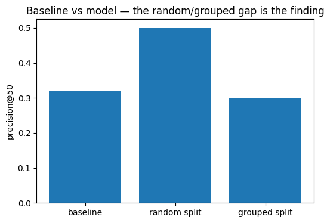

Research Paper — FlyRank ML Capstone
I asked whether a random forest can rank which content pages will decline in search visibility better than a simple, transparent baseline rule can. Using three months of FlyRank warehouse data as features and the following two months as a genuinely future-observed label, I trained a model and validated it two ways: a naive random row split and an honest split grouped by client. The random split looked strong (0.500 precision@50); the grouped split told a different story (0.300) — below the baseline's 0.320. The 0.200 gap between the two splits was itself the finding: the model was partly memorizing client identity, not learning a real decline signal. I report this as a negative result and recommend the transparent baseline until a model can be shown to beat it under honest validation.
A content editor at any given client has limited hours and a growing backlog of pages. The decision this work supports is simple to state and hard to get right: which pages should an editor open first this week? Get it right, and editor time goes toward pages that are actually losing visibility while there's still time to act. Get it wrong, and either a real decline goes unreviewed until it's much harder to reverse, or an editor's limited hours are spent on a page that was never going to move the needle.
The question this paper answers: given a page's search performance and engagement signals over a 3-month window, can a model rank which pages will decline over the following 2 months well enough to beat a simple, transparent rule?
Release: FlyRank Internship Warehouse, v20260703 (frozen snapshot,
exported 2026-07-03). Tables: fact_content_daily_performance
(partitioned by month), dim_clients.
Windows:
Excluded: 26 of 104 clients (25%) have access_profile =
'no_search_or_analytics_access' and carry no usable signal; they are excluded
from the analysis population entirely, not just from features. All identifiers used
throughout (client and content hashes) are pseudonymous, salted hash keys provided by
FlyRank — no client names, domains, or URLs appear anywhere in this paper or its
underlying notebook.
Unit of analysis: one (client, content item) pair, with features aggregated over the feature window.
Features: average search position, total impressions, total clicks, total AI-referral sessions — all computed strictly within the feature window.
Label: declined = 1 if the label window's monthly-average
impressions fell more than 20% below the feature window's monthly-average pace.
Baseline: a transparent rule — rank pages by feature-window impressions alone, no model involved.
Validation: two splits, reported side by side. A naive random 70/30 row
split, and a GroupKFold split grouped by client — the honest split, since
rows from the same client share hidden structure a random split lets a model exploit
without actually learning anything general. The gap between the two is treated as a
leakage signal, not discarded.
Leakage checks: the label's own ingredient (label-window impressions) is never used as a feature; every feature is drawn strictly from before the label window; the baseline itself is never used as a model input.
Under honest, client-grouped validation, the model did not beat the baseline — 0.300 vs. 0.320 precision@50.
| Metric | Value |
|---|---|
| Base rate (share of pairs that declined) | 16.1% |
| Baseline — precision@50 | 0.320 |
| Model — random split — precision@50 | 0.500 |
| Model — grouped split — precision@50 | 0.300 |
| Random vs. grouped gap | 0.200 |

Baseline vs. model, both split types. The gap between the middle and right bars is the real story, not the height of either one alone.
Feature importances (grouped-split model):
| Feature | Importance |
|---|---|
| avg_position | 0.549 |
| impressions_feat | 0.401 |
| clicks_feat | 0.045 |
| ai_sessions_feat | 0.005 |
Two features account for ~95% of what the model uses, and one of them — impressions — is exactly what the baseline already ranks by directly. That overlap is consistent with the model failing to add value: it had little genuinely new signal to work with.
Until a model can be shown to beat the baseline under honest, grouped validation, the transparent rule is the better tool: rank pages by feature-window impressions, and review the highest-impression, worst-position pages first. That recommendation isn't earned by the model — it's earned by the baseline the model failed to beat, which is exactly why it's worth stating plainly rather than dressing the model result up as a win.
Next steps, in order of expected value:
Full notebook history for this capstone, including every query and the exact code that
produced every number above, is in this repository:
work/notebooks/capstone.ipynb.
Weekly framing notebooks (w01–w03) that built up to this lane
are in the same work/notebooks/ folder.